type a number or an equation
+
A review of how napkin is used on a phone and with a mouse, with proposals for Tucker to
rule on. Nothing here is built. The full text, with costs and the bug list, is in
docs/plans/interaction-review.md.
Pictures with a solid border are screenshots of the app today. Pictures in a dashed frame marked sketch are drawings of a proposal, not the app.
NaN always has a reason.The rule after: a tap selects, and the selected thing shows what can be done to it. A drag means what it starts on. Two fingers always mean the canvas.
| To do this | Today | Proposed |
|---|---|---|
| Change a number on a phone | Tap it (keyboard opens), then drag two fingers anywhere | Tap it, then drag sideways on it |
| Change a number with a mouse | Wheel over it, selected or not | Click it, then drag sideways or use the wheel |
| Zoom | Pinch or wheel, unless a number is under the pointer or was touched last | Pinch or wheel, always |
| Type a number | Tap or click the number | Tap the selected number again; double click; Enter |
| Rename, lock, digits, delete | Hover, then 22 px buttons | Select, then the bar at the bottom |
| Delete an edge | Hover, then a 16 px button | Tap the edge, then Delete in the bar |
| Add by typing | Double click or double tap blank canvas | The "+" button; double click and double tap still work |
| Add from the ring | Right click or long press; tap or drag a handle | The same |
| Pick a what-if choice | A chip beside each node | A row in the list at the bottom |
| Take back a mistake | Not possible | Undo button; Cmd+Z |
| Debug setting | Shift click | In the menu |
The full tables, with every clash, are in the review document.
Type 3 m + 2 s and press Enter, or connect 3 m and
2 s to a + by hand. The preview says the units do not fit, and
then the app goes blank. The workspace was saved, so a reload is blank too.
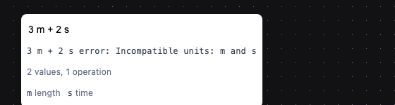
After. A tap on a number, a node, or an edge gives it a clear outline and does not open the keyboard. A bar at the bottom shows it in large type with its actions. Tap the name to rename, the number to type, the unit for the unit list.
Today. Rename, lock, digits, and delete are behind a hover. On a phone the buttons show only because a tap sends a hover, and they are 22 px. A tap on a number opens the keyboard and shows the full number in a field too narrow for it.
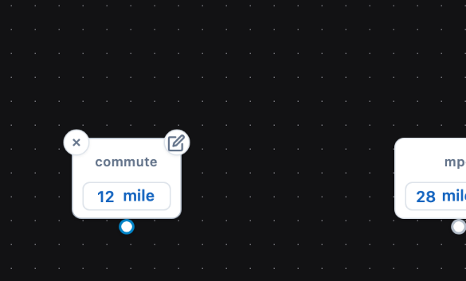
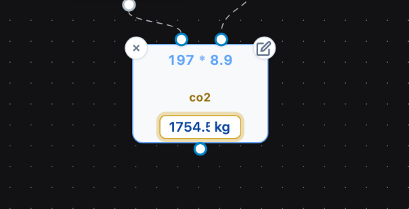
Why not the alternatives. Bigger buttons on each node cover neighbours and shrink with zoom. A menu on long press is hidden. A side panel has no room on a phone. Spreadsheet apps on phones work the proposed way: one tap selects, a second tap edits.
Cost. Medium, about three days. Interface only. It removes the hover buttons.
After. With a number selected, one finger or the mouse on it, dragged sideways, changes it. Right is more. A pinch always zooms. The wheel changes a number only when it is selected.
Today. After a tap on a number, a pinch changes that number in place of zooming.
In the test a pinch moved commute from 12 to 15. With a mouse, turning the
wheel to zoom changes any number under the pointer, by 1/100 of the digit it shows, so
12 becomes 12.03 and still reads 12.
Why not the alternatives. The two-finger scrub is the cause of the clash and cannot be found by looking. Up and down clashes with scrolling the list. Figma, Blender, and Bret Victor's Tangle all change a number by a sideways drag.
Cost. Medium, two days. Interface only. It removes the two-finger scrub.
After. Changing a computed value opens a short list in the bar at the bottom. Each row is one input that could move, with its name, old number, new number, and unit. A lock on the row means "never move this", and the row goes away.
Today. Each choice is a chip beside its node. On a phone the chips for
commute and workdays are under the next node, and two more are
off the screen. A chip has no name and no unit. The first pick was the unnamed
2.
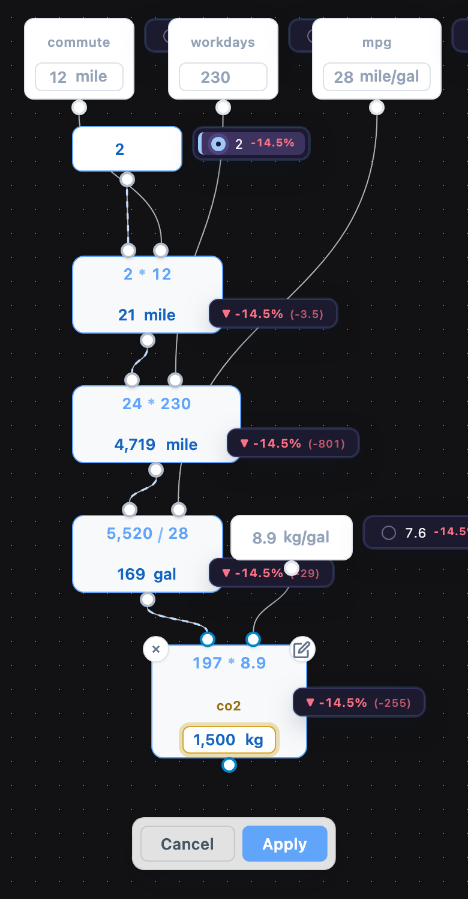
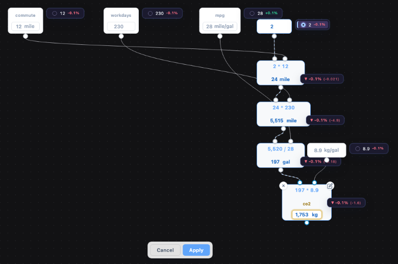
Cost. Medium, two to three days. Interface only.
After. An undo button in the top bar, and Cmd+Z. Every change to the workspace can be taken back.
Today. None. With a node selected, Backspace deletes it at once. The hover
× deletes at once. An applied what-if cannot be taken back.
Why. Undo lets the rest be direct: no confirm on delete, and no Apply on a plain change. Cost. Medium, two days: keep the last saved documents in memory and load the one before. No change to the core model.
After. An empty operation shows two empty slots and no number. A result with no real answer shows a dash and the reason. A failed save shows "Not saved" until a save works.
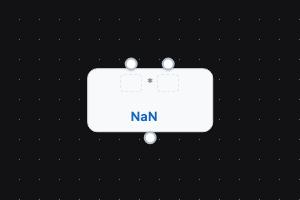
Cost. Small, one to two days. A small core change: an operation gives a reason when it cannot compute.
After. A "+" at the bottom right opens a full-width line above the keyboard, with the reading of the entry over it. After Enter the view moves to show the result. The same line works in the list.
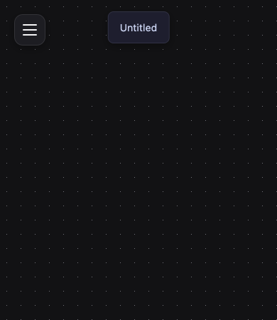
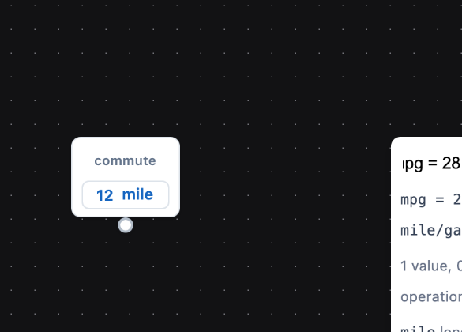
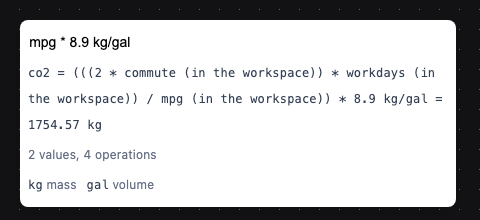
Cost. Medium, two days. Interface only. The preview stays as it is.
After. A change to a typed number flows through the graph and is done. Apply and Cancel show only for a change to a computed value. To hold a result still, lock it. The "Advanced Mode" setting goes away.
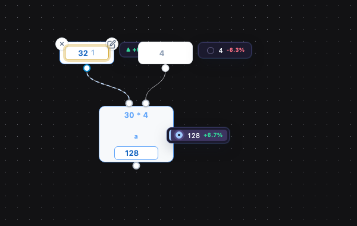
Cost. Small to medium. Needs a check that the core offers the same choices when a result is locked. Best after undo.
After. A result shows three figures. A value moved by a what-if shows enough
digits to differ from before. One scrub step is one of the last digit shown, and never
coarser than the second figure: 5 goes 5.1, 5.2.
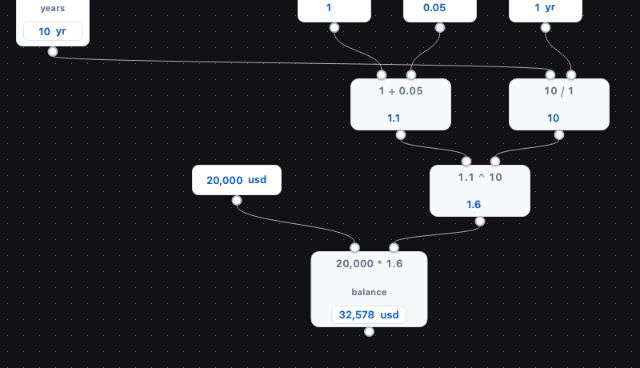
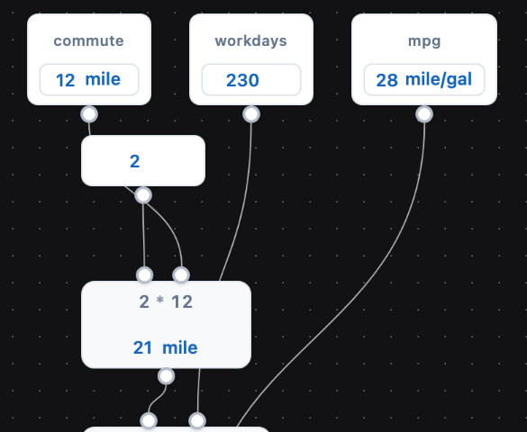
Cost. Small, one to two days. The default for results is one line.
After. A narrow screen opens to the list. A switch in the top bar goes to the canvas and back, and is remembered. Each group shows inputs first and results after. Locked values fold into one row. The menu lists workspaces first.
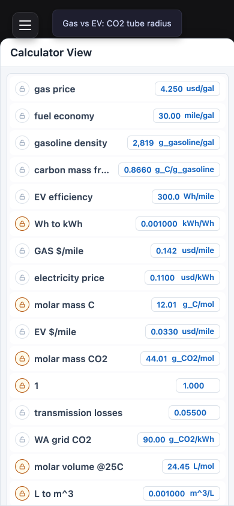
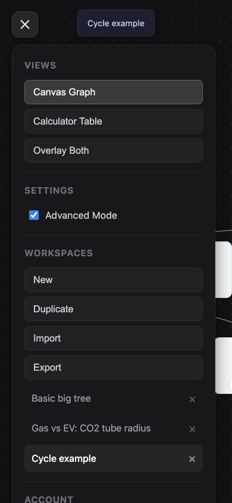
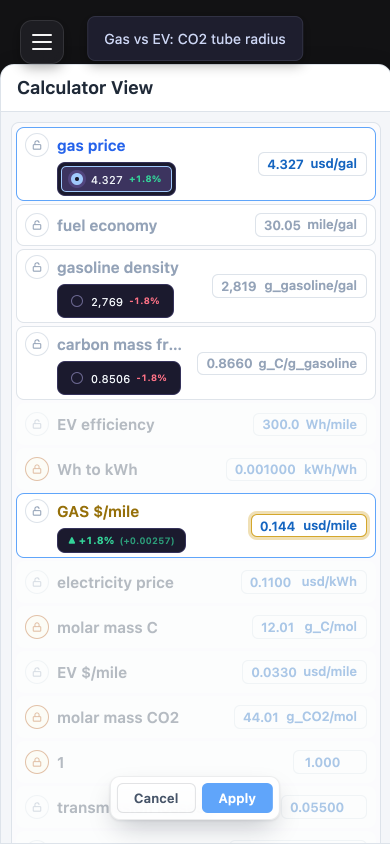
Cost. Medium, two to three days. Interface only.
After. A node added from a handle takes the nearest free place below its source. A node added anywhere moves aside if it would cover another. The view moves to show it. The ring at a handle opens below the handle.
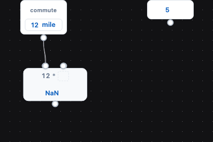
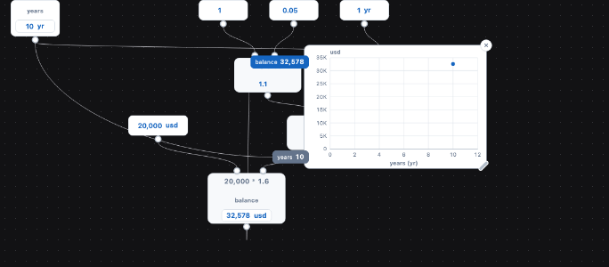
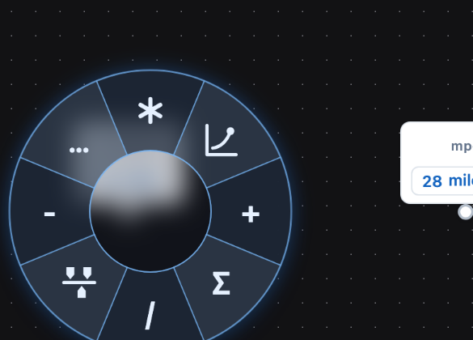
Cost. Small, one to two days. Canvas layout only.
After. The first run opens a small real workspace, fitted to the screen, with three hints that go away once done. An empty workspace shows one line of help.
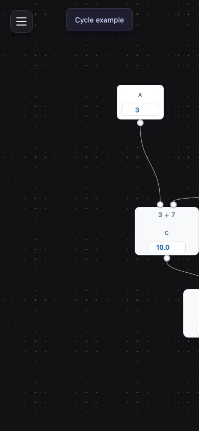
Cost. Small, one day, plus writing the example.
After. The header names each input, or shows its number with its unit:
commute * 2, 5,520 mile / mpg. During a what-if it shows the
numbers on screen. Today it shows bare numbers, and they do not change during a
what-if (see the desktop what-if picture above). Cost. Small, half a day.
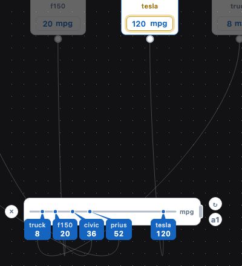
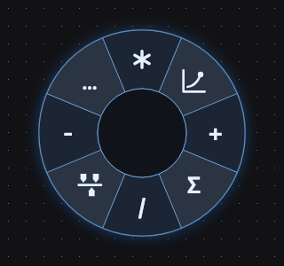